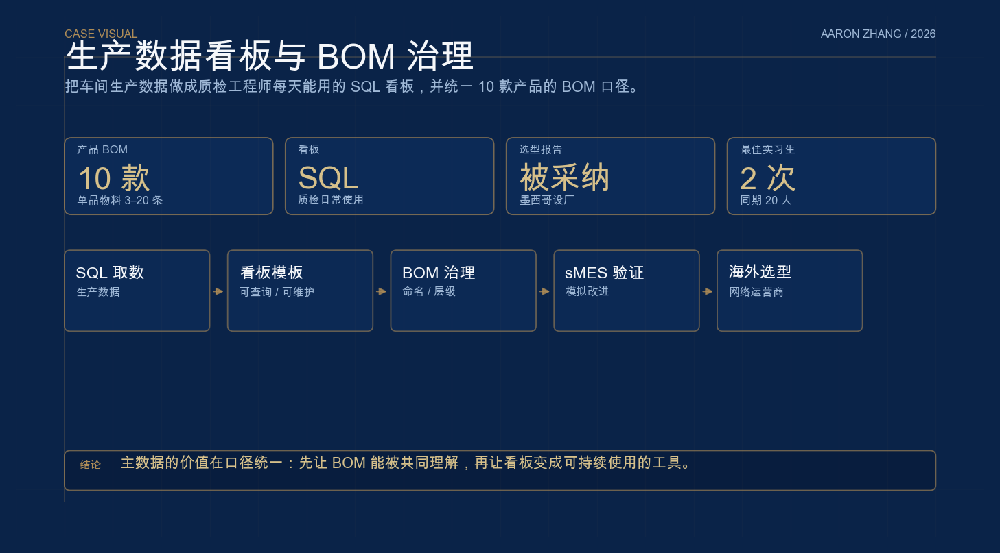

生产数据看板与 BOM 治理
用 SQL 把车间生产数据做成质检工程师每天能用的看板，并统一 10 款产品的 BOM 数据口径。
| 公司 |
青岛 Carflex 汽车配件有限公司 |
| 时间 |
2025.07 – 2025.09 |
| 角色 |
IT 部门实习 · 生产数据 / BOM 治理 |
| 关键词 |
SQL / MySQL 数据看板 BOM sMES |
背景 / Context
车间生产数据分散在不同表格和系统里，质检工程师需要频繁查询、汇总和更新。原来的看板模板不统一，数据口径也不一致，容易出现「同一件事，不同表里数字对不上」的情况。
同时，公司有 10 款产品需要维护 BOM 清单，每款产品的单品物料在 3–20 条之间。物料命名、层级和配置关系不统一，会影响定制化配置和生产质检协同。
我的工作 / What I did
1. SQL 生产数据看板
- 独立搭建车间看板的数据模板。
- 用 SQL 完成生产数据的增删改查与日常维护。
- 把质检工程师常用的查询固化成模板，减少重复取数。
- 支撑生产数据的实时透明化，让异常更早被看到。
2. BOM 数据治理
- 维护 10 款产品的 BOM 清单，单品物料 3–20 条。
- 统一物料命名、层级和字段口径。
- 支持定制化配置与生产质检协同，减少「同名不同物 / 同物不同名」。
3. 生产线与海外选型项目
- 深度参与舍弗勒生产线项目：会议沟通、需求对接、纪要汇报。
- 通过 sMES 模拟验证改进方案，协助完善生产与质检规范。
- 参与墨西哥设厂网络运营商选型：多维度对比中国移动与中国电信方案，输出选型报告，结论被采纳并支持海外设厂决策。
结果 / Impact
- 看板模板供质检部门工程师日常使用，生产数据从「分散表格」变成「可查询的模板」。
- 10 款产品的 BOM 数据口径统一，支持定制化配置与质检协同。
- 墨西哥设厂网络运营商选型报告被采纳。
- 两度获评 「最佳实习生」（同期实习生共 20 人）。
关键数据 / Key Numbers
| 指标 |
数值 |
口径 |
| 产品 BOM |
10 款 |
单品物料 3–20 条 |
| 看板 |
SQL 模板 |
质检工程师日常使用 |
| 生产线项目 |
sMES 模拟验证 |
舍弗勒生产线 |
| 海外选型 |
墨西哥设厂 |
中国移动 vs 中国电信 |
| 最佳实习生 |
2 次 |
同期实习生 20 人 |

图：SQL 取数、看板模板、BOM 治理、sMES 验证与海外选型的项目链路。
结论 / Takeaways
- 主数据的价值在口径统一：BOM 不是“表建得多”，而是同名同物、同物同名，配置和质检才能对得上。
- 看板要能被持续使用：把查询固化成模板，让质检工程师不必每次重新写 SQL，才是真正的落地。
- 技术工作要放进项目节奏：会议、需求、纪要、模拟验证和选型报告，和写 SQL 一样重要。
可迁移的能力 / What it shows
- SQL 落地能力：不是写一条查询，而是把查询变成别人能持续用的模板。
- 数据治理：BOM 这类主数据的价值在「口径统一」，不在「表建得多」。
- 项目协同：会议、需求、纪要、验证方案，把技术工作放进真实的项目节奏里。
说明：该项目为实习期间内部项目。以上仅展示问题拆解、方法和个人贡献，不包含公司数据、系统截图或源代码；部分细节已做脱敏和概括处理。